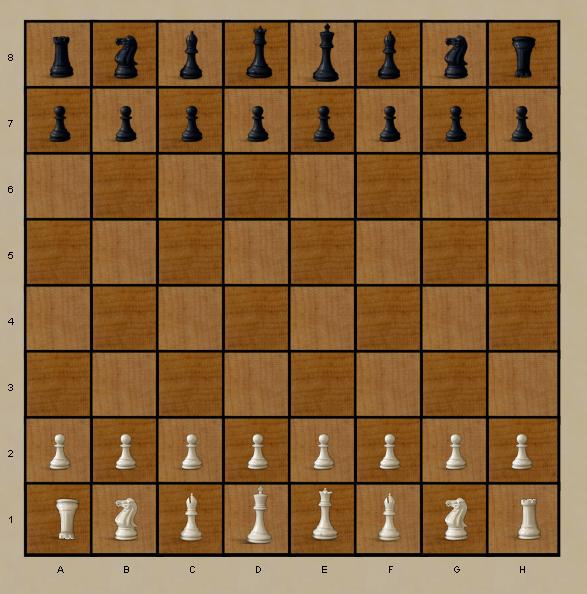

Chess
(and chess variants)
In the western world, Chess
is everyone's first abstract game, and also one of the most widely
available games in virtually any game related context. As the
worlds best known abstract, it's also the focus of unlimited numbers of
variants and related games.
- Chess960, also known as Fisher Random Chess.
- Ultima A truely different kind of chess,
- King's Color is a wild chess-like game on a Hex board.
Robots:
They play ok, but are not intended to be world class opponents.
|

Ultima chess variant
|